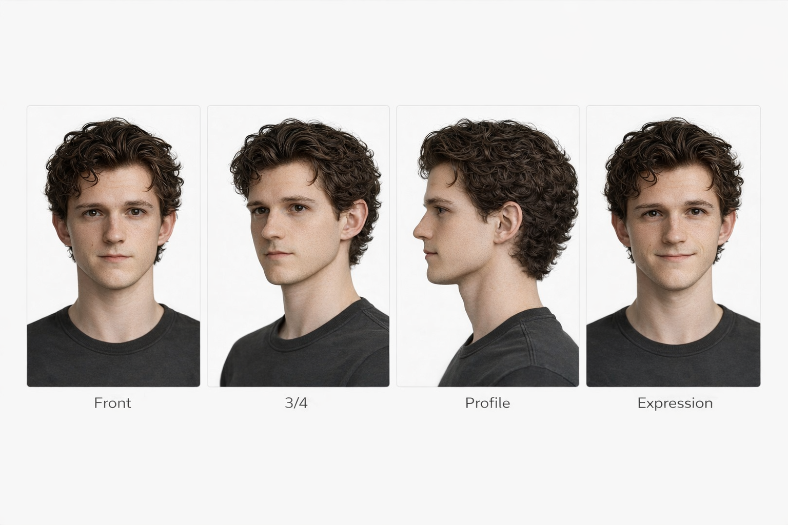

Lucien
Quick Identity Summary
Lucien is a slender man of average height with refined facial features, an elegant build, and a calm, slightly mysterious presence. His aesthetic is occult, scholarly, and subtly gothic, expressed through dark layered clothing, antique jewelry, and ritual-inspired accessories.
Quick Reference
| Task | Best References |
|---|---|
| Portrait | Face Anchor Sheet |
| Anatomy | Anatomy Sheet |
| Outfit | Signature Outfit Sheet |
| Pose | Pose Sheet |
| Scene | Ultimate Character Sheet |
Prompt Priority Fields
Height: 170 cm (5'7")
Build: slender, elegant
Aesthetic keywords: occult, gothic, scholarly
These are the three most important traits to preserve in prompts.
Prompt Workflows
These sections list the best references to attach for common generation tasks.
Portrait / Face Prompts
Attach:
- Face Anchor Sheet
- 3/4 Face Reference
- Front Face Reference
Optional:
- Expression Sheet
Recommended prompt blocks:
- Identity Block (Short)
- Face Block
- Expression Block
Anatomy / Physique Prompts
Attach:
- Anatomy Sheet
- Body Proportion Grid
- Face Anchor Sheet
Optional:
- Muscle Tension Sheet
Recommended prompt blocks:
- Identity Block (Extended)
- Body Block
- Movement Block
Outfit / Style Prompts
Attach:
- Ultimate Character Sheet
- Signature Outfit Sheet
- Body Anchor Sheet
Optional:
- Design Language Sheet
Recommended prompt blocks:
- Identity Block (Extended)
- Style Block
- Wardrobe Block
Pose / Motion Prompts
Attach:
- Ultimate Character Sheet
- Signature Outfit Sheet
- Pose Sheet
Optional:
- Motion Sheet
Recommended prompt blocks:
- Body Block
- Movement Block
Scene Prompts
Attach:
- Ultimate Character Sheet
- Signature Outfit Sheet
- Scene references
Optional:
- Expression Sheet
Recommended prompt blocks:
- Identity Block (Short)
- Style Block
- Expression Block
Identity Pack
These are the most important reference sheets for Lucien and should be attached whenever possible:
- Face Anchor Sheet
- Anatomy Sheet
- Body Anchor Sheet
- Ultimate Character Sheet
- Signature Outfit Sheet
Suggested prompt attachment priority:
- Face Anchor Sheet
- Anatomy Sheet
- Ultimate Character Sheet
- Signature Outfit Sheet
- task-specific sheet
Face Anchor Sheet

Core Profile Files
These files define Lucien conceptually:
library/10_CHARACTERS/LUCIEN/00_PROFILE/metadata.yamllibrary/10_CHARACTERS/LUCIEN/00_PROFILE/character_summary.mdlibrary/10_CHARACTERS/LUCIEN/00_PROFILE/prompt_blocks.md
Recommended use:
metadata.yaml→ structured reference datacharacter_summary.md→ quick human-readable overviewprompt_blocks.md→ reusable prompt text fragments
Core Reference Sheets
Face Identity
Folder:
library/10_CHARACTERS/LUCIEN/01_FACE/
Key files:
- face front
- face 3/4
- face profile
- face anchor sheet
Hair Identity
Folder:
library/10_CHARACTERS/LUCIEN/02_HAIR/
Key files:
- hair reference sheet
Physique
Folder:
library/10_CHARACTERS/LUCIEN/03_ANATOMY/
Key files:
- anatomy front
- anatomy side
- anatomy back
- anatomy sheet
Additional structure anchors:
04_PROPORTIONS/→ body proportion grid05_MUSCLE/→ muscle tension sheet06_BODY/→ body anchor sheet07_SILHOUETTE/→ silhouette sheet08_TURNAROUND/→ turnaround sheet
Expression and Gesture
Folders:
09_EXPRESSIONS/10_HANDS/
Key files:
- expression sheet
- hand reference sheet
Master Identity
Folder:
11_UCS/
Key files:
- UCS panels
- assembled Ultimate Character Sheet
Style
Folders:
12_SIGNATURE_OUTFIT/13_DESIGN_LANGUAGE/14_WARDROBE/
Key files:
- signature outfit sheet
- design language sheet
- wardrobe sheets
Motion and Scene Use
Folders:
15_POSES/16_MOTION/17_SCALE/18_SCENES/19_PROPS/
Key files:
- pose sheet
- motion anchor sheet
- height / scale references
- scene anchors
- prop interaction references
Style Summary
Lucien’s style should read as:
- occult
- scholarly
- subtly gothic
- refined rather than theatrical
- ritual-aware rather than costume-like
Typical style elements:
- dark layered fabrics
- antique silver jewelry
- rings
- talismans
- soft textured materials
- muted dark palette
Avoid:
- generic modern casual styling
- bright sporty aesthetics
- bulky or athletic-heavy styling
- overly theatrical “costume” treatment
Prompting Notes
For anatomy or body prompts, prioritize:
- Anatomy Sheet
- Body Proportion Grid
- Face Anchor Sheet
For outfit or style prompts, prioritize:
- Ultimate Character Sheet
- Signature Outfit Sheet
- Design Language Sheet
For scene prompts, prioritize:
- Ultimate Character Sheet
- Signature Outfit Sheet
- scene-specific references
Library Path
Main folder:
library/10_CHARACTERS/LUCIEN/
Profile folder:
library/10_CHARACTERS/LUCIEN/00_PROFILE/
Identity pack folder:
library/10_CHARACTERS/LUCIEN/IDENTITY_PACK/